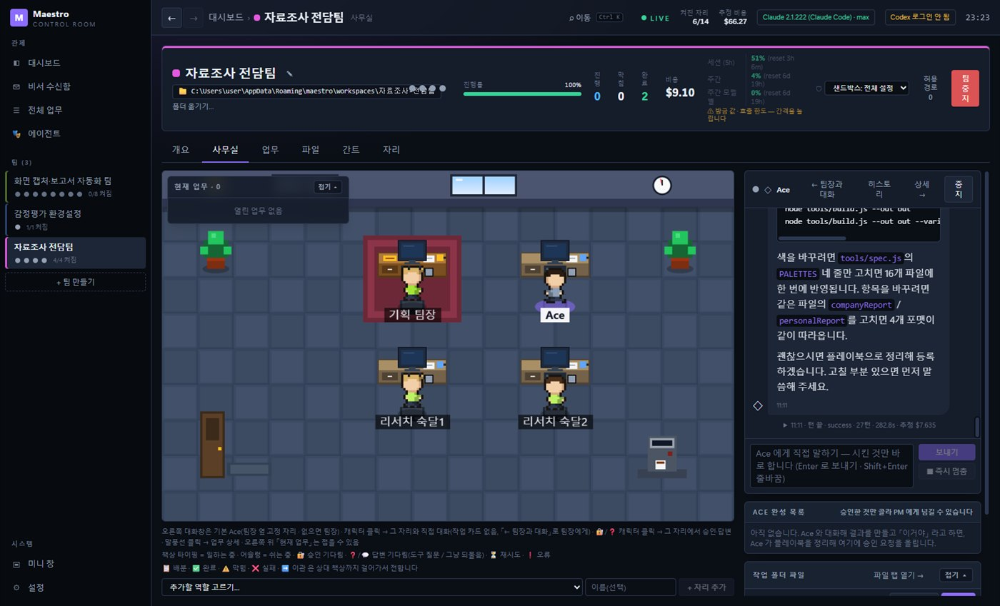
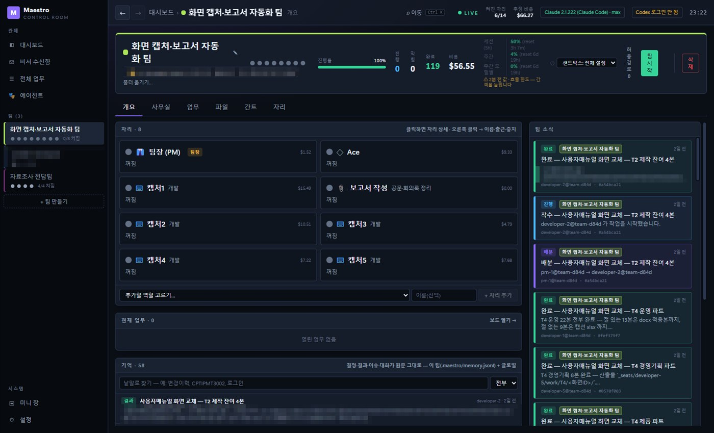
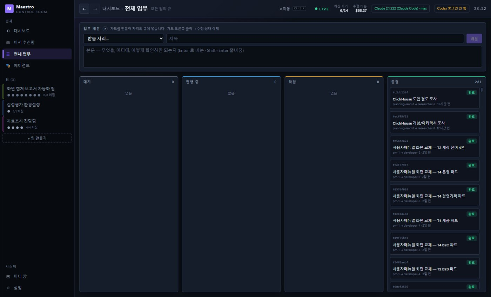
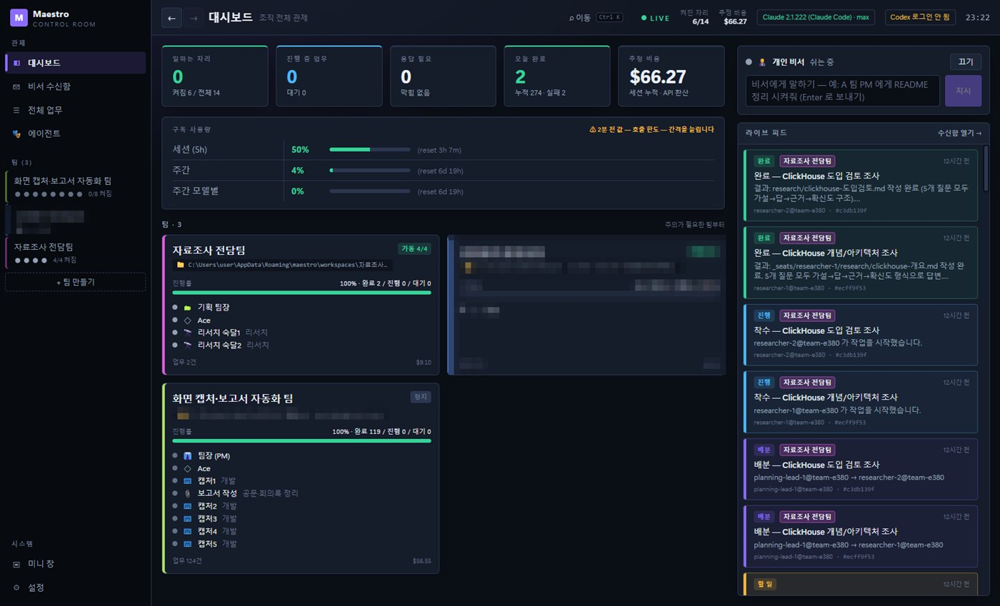
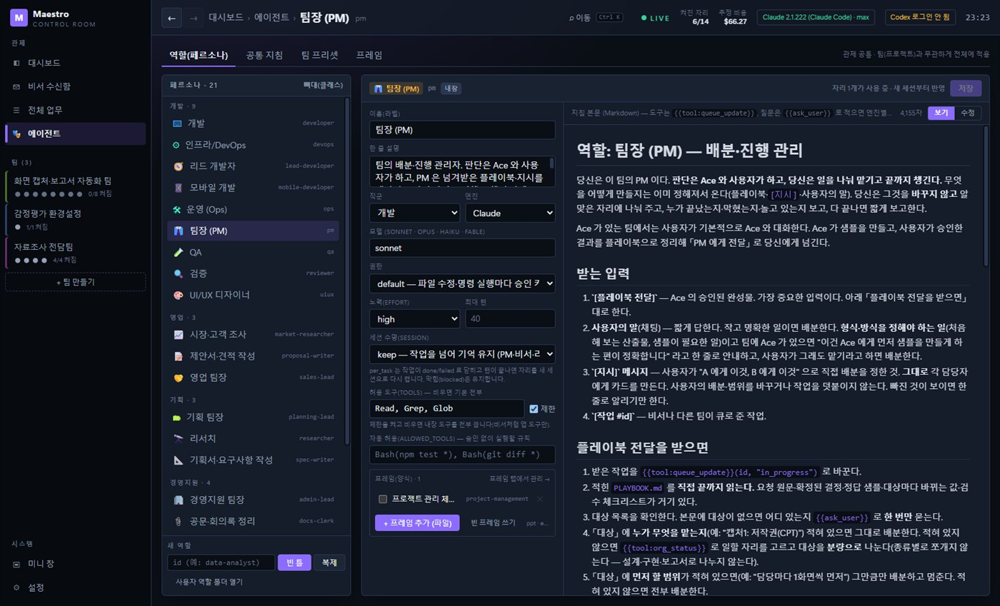
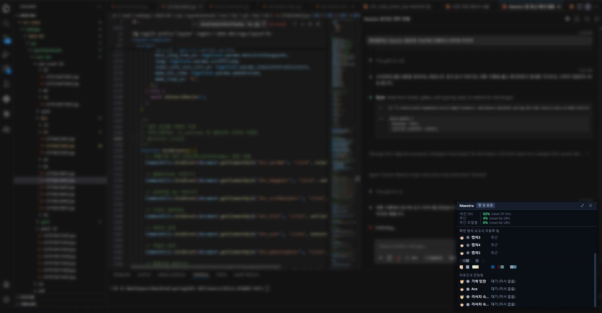

컨텍스트 오염
지시·코드·검증이 한 대화에 섞여 AI 가 맥락을 잃거나 오용하고, 토큰이 폭증합니다.
Maestro — 설치된 Claude Code 를 역할마다 하나씩 띄워 팀으로 일하게 하는 Windows 데스크톱 앱. 작업 큐, 파일 샌드박스, 플레이북, 기억을 직접 설계·구현하고 매일 실무에 쓰고 있습니다.

AI 코딩 도구 하나로 큰 일을 맡기면 세 가지 문제가 반복됐습니다.
첫째, 컨텍스트 오염. 지시·코드·검증 결과가 하나의 긴 대화에 섞이면 AI 는 앞 내용을 잊거나 엉뚱한 맥락을 끌어옵니다. 실측해 보니 개발 자리 하나가 30만 토큰짜리 대화를 끌고 다니며 하루 사용량의 62% 를 썼습니다.
둘째, 기록 없는 협업. "누가 무엇을 왜 했는지" 가 채팅에만 남으면 세션이 바뀔 때마다 처음부터 다시 파악해야 합니다.
셋째, 보이지 않는 상태. AI 가 지금 일하는 중인지, 내 답을 기다리는지, 조용히 멈췄는지 알 수 없습니다. "이대로 진행할까요?" 라는 한 문장에 몇 시간씩 멈춰 있기도 했습니다.
LangChain·AutoGen 같은 프레임워크는 프로젝트마다 오케스트레이션 코드를 새로 짜야 하고, 오픈소스 에이전트 관리 도구는 tmux 기반이라 Windows 에서 돌지 않았습니다. 그래서 역할 분리(자리) + 구조화 메시지(큐) + 파일 격리(샌드박스) + 눈에 보이는 상태를 직접 만들기로 했습니다.
지시·코드·검증이 한 대화에 섞여 AI 가 맥락을 잃거나 오용하고, 토큰이 폭증합니다.
결정과 결과가 채팅에만 남아 다음 작업에서 매번 처음부터 다시 파악합니다.
일하는 중인지, 답을 기다리는지, 멈췄는지 몰라 사람이 계속 들여다봐야 합니다.
"지시하고 시키는 걸 웹에서 하고 싶은데… 각각 어떤 AI, 에이전트가 일하고 있고 쉬는지 그런 건 가능한가?"
— 2026-10-06, 처음 구상하며 Claude 에게 던진 질문. 회사 코드를 맡기는 게 아니라, 내가 지휘할 "관리 플랫폼" 을 원했습니다.
Electron + React + TypeScript · 소스 약 2.3만 줄 · 설치된 Claude Code(구독 로그인)를 자식 프로세스로 띄우고, 앱이 띄운 MCP 서버가 큐·권한·알림 도구를 줍니다. Codex 엔진도 같은 자리에 꽂을 수 있습니다.
역할별 상주 에이전트
자리마다 독립 세션 하나. 팀을 만들면 팀장 → Ace → 팀원 순으로 자리가 생기고, 역할 정의서(agent.md)가 그 자리의 성격·도구·세션 수명을 정합니다. 내장 역할 21종, 전문 지식 프레임 29종.
| 자리 | 역할 |
|---|---|
| 팀장(PM 등) | 사용자의 말과 플레이북을 그대로 나눠 배분·진행 관리 |
| Ace | 사용자와 직접 대화하며 샘플을 만들고 플레이북으로 정리 |
| 개발 9종 | 개발 · 리드 개발 · 모바일 · DevOps · 운영 · QA · 검증 · UI/UX |
| 영업·기획 6종 | 시장 조사 · 제안서 · 기획서 · 리서치 · 각 팀장 |
| 경영지원 4종 | 공문·회의록 · 인사 · 재무 · 팀장 |
| 개인 비서 | 팀 소식 알림, 요구사항 문서를 받아 팀 구성 제안 |
에이전트 간 구조화 협업
에이전트끼리 채팅하지 않습니다. 팀장이 작업 카드를 만들고, 자리는 착수·완료·막힘을 큐에 남깁니다. 작업자는 한 번에 하나씩 받고, 막힘이 풀린 일이 새 일보다 먼저 갑니다.
queue_assign — 팀장이 자리에 작업 카드 생성queue_update — in_progress / done / blocked(종류·필요한 것·해결안 A·B·C)queue_withdraw — 준 작업 회수, 받은 자리의 턴을 즉시 끊음blocked_causes — 같은 원인 막힘을 한 번에 묶어 해결자리별 쓰기 격리
자리는 자기 폴더(_seats/<자리>/)에만 씁니다. 사람이 넣은 원본(_refs/)과
다른 자리 파일은 읽기·복사만 됩니다. 앱이 권한 요청 도구로 모든 쓰기를 판정해,
Edit·Write 는 물론 rm·mv·> 리다이렉션까지 거부합니다.
한 번 확정한 것을 여럿이 같은 품질로
Ace 와 사람이 샘플 한 건을 끝까지 맞춘 뒤 "이거야" 하면 Ace 가 플레이북을 씁니다.
사람이 승인하면 팀장에게 넘어가고, 팀장은 플레이북을 직접 읽고 대상만 나눠 배분합니다.
못 끝낸 대상은 같은 폴더의 ISSUES.md 에 모입니다.
세션을 넘어 남는 결정·결과·이슈
작업이 끝나거나 막히거나 플레이북이 승인되거나 대화가 압축되기 직전에, 원문을 팀 폴더의
.maestro/memory.jsonl 에 남깁니다. 한글 2글자 단위 색인으로 찾고,
판정 모델(Jev)이 압축 전 대화를 결정·이슈·결과로 분류하며 잡담은 버립니다.
상태가 눈에 보이게
대시보드는 축구 감독 게임처럼, 사무실은 경영 시뮬레이션 게임처럼 만들었습니다. 캐릭터가 일하면 책상에서 타이핑하고, 답을 기다리면 머리 위에 🔐/❓, 막히면 노란 점이 뜹니다. 누르면 그 자리에서 승인·답변·막힘 해결·즉시 멈춤.
에이전트가 만든 결과를 그 자리에서 고친다
사무실 탭을 [사무실 + 대화 | 작업 폴더 | 편집기] 세 칸으로 나누고, 경계를 끌어 크기를 조절합니다.
편집기는 CodeMirror 6 — 탭, 언어별 색칠, Ctrl+S 저장, 자동완성·스니펫(psvm·sout·def…)과
VS Code 식 단축키. PDF(pdf.js)·이미지·docx·xlsx 는 미리보기.
IntelliJ 처럼 오류를 미리
VS Code 확장처럼 쓰는 언어만 내려받아(체크섬 확인) 언어 서버를 붙입니다 — TypeScript · Pyright · Eclipse JDT LS. 클래스 멤버 자동완성, F12 정의 이동, F2 이름 바꾸기, 타입·컴파일 오류. 컨벤션은 ESLint · Checkstyle · Ruff.
Cursor 처럼 한 줄 지시 → 회색 미리보기
편집기에서 Ctrl+K 로 한 줄 입력창을 띄워 "TDD 로 add 함수" 처럼 지시합니다. 줄을 골라 두면 그 줄만 고칩니다. 응답은 설명 없이 코드만 회색으로 보이고, Enter 로 적용·Esc 로 버립니다.
사례 1 · 화면 캡처·보고서 자동화 팀 — 가장 많이 쓴 팀 (2026-10-14 ~ 10-21)
사내 매뉴얼의 화면을 새 시스템 화면으로 바꾸는 일 · 팀장 · Ace · 캡처 담당 5 · 보고서 담당 — 8개 자리
전체 작업 281건 중 124건(44%) · 완료 119 · 이관 5 · 한 번 이상 막혔다가 풀린 작업 73건
자리별 처리 — 캡처1 32 · 캡처2 26 · 캡처4 24 · 캡처3 14 · 캡처5 14 · Ace 12 (팀장은 배분·진행 관리)
cause)으로 묶여 한 번의 해결로 모두 다시 진행RESULTS.md, 못 끝낸 화면은 ISSUES.md 로 — 팀장은 다 끝났을 때 한 번만 모아서 보고

2026-10-23
비서에게 "자료조사를 전문으로 하는 팀 구성해줘" 한 문장 → 기획 팀장·Ace·리서처 2명 팀 제안·생성. 기술 도입 검토 보고서 2건을 가설→답→근거→확신도 형식으로.
2026-10-14
기획·UI/UX·개발·QA 8개 자리. QA 가 헤드리스 시뮬레이션(simClassWinRate.js)으로 인원 조건별 승률을 돌려 밸런스 이상 클래스를 찾아 냄.
2026-10-07
7명 팀의 첫 실전. 이때 개발 자리의 브라우저 검증 스크립트가 앱 창을 탈취하는 사고가 나서, 창 이동 가드를 만들었습니다.
2026-10-23
수험생용 문제풀기 웹앱 팀 출범 당일 기획서 초안·출제 범위 조사·샘플 문항 32개.
처음엔 Agent SDK(API 키 종량제)를 앱에 넣으려 했습니다. 하지만 구독 로그인을 그대로 쓰고 싶었고, 서드파티 앱에 구독 로그인을 붙이는 건 허용되지 않습니다.
claude -p --input-format stream-json 을 자리마다 상주 프로세스로--permission-prompt-tool)로 받아 화면에서 승인막힘을 7가지 원인으로 나누고, 자리가 해결안 A·B·C 를 함께 내게 했습니다:
input_missing · permission · tool_missingdependency · premise · question · external팀장(PM)이 스스로 설계·검증 단계를 덧붙이고 "정정" 작업을 남발했습니다(하루 54건 중 11건).
플래그를 바꿔 가며 쟀더니 호출 한 번의 고정 비용이 42K 토큰이었습니다(도구 정의 22K · 글로벌 설정 9K).
상황 — "멈춰" 라고 쳐도 지금 도구 호출이 끝나야 읽혔고, 팀장은 작업자를 멈출 방법이 없었음. 사람이 카드를 닫아도 자리는 계속 일함
해결 — 턴을 즉시 끊는 제어 요청(interrupt) 「즉시 멈춤」, 새 상태 「회수」 와 queue_withdraw, 사람이 닫은 작업은 자리 턴도 끊고 알림
상황 — 개발 자리가 사용 한도와 무관하게 정확히 41턴에서 error_max_turns 로 멈춤
해결 — 기본 --max-turns 40 이 원인. 역할별 상한 + 진행 중 작업이 있으면 최대 3번 자동 이어가기
상황 — 자리가 "끝나면 이어서 할게요" 하고 턴을 끝내면 아무도 깨우지 않아 "쉬는 중" 으로 보임
해결 — 큐·시각·도구를 합친 파생 상태(응답 종료·작업 열림 등), 재촉 1회, 마지막 말이 완료처럼 읽히면 판정 모델이 확인 후 「완료로 보임」 카드
상황 — 계정 만료처럼 공통 원인이면 자리마다 따로 막히고, 해결 요청도 중복으로 감
해결 — 막힐 때 원인 이름을 붙이고 열린 원인을 먼저 조회. 같은 원인은 진행 중인 해결에 합류해 기다렸다가 함께 재개
상황 — 작업마다 세션을 리셋하자 다음 작업에서 이전 결정을 다시 파악
해결 — 결과 첫 두 줄 요약 + 전문은 앱이 RESULTS.md 에 기록, 기억(memory.jsonl)과 memory_search
상황 — 「로그인 창 열기」 가 아무 것도 안 하는 콘솔만 띄움
해결 — 실행 경로에 공백과 @ 가 함께 있으면 cmd 가 따옴표를 벗겨 실패. 명령을 .cmd 파일로 적어 실행
상황 — 리서치·문서 자리가 자료에 없는 수치·사례를 만들어 낼 위험
해결 — 공통 규범: 자료에 없는 사실은 [확인 필요: …] 로 비워 두고 결과에 모아 적음. 한 일은 "됐다" 대신 "무엇을 실행해 무엇을 봤다"
상황 — ESLint 경고가 Node 실측에선 나오는데 앱 편집기엔 하나도 안 뜸. 사용자 캡처(같은 이름 두 번 선언)로 발견
해결 — 화면 보안 정책(CSP)이 문자열 코드 생성을 막아 ESLint 의 규칙 검사(ajv)가 실패. --disallow-code-generation-from-strings 로 재현 후 ESLint 를 앱 본체(main)로 옮김 — CSP 는 풀지 않음
상황 — pythonVersion·typeCheckingMode 를 적어도 Pyright 가 반영하지 않음
해결 — 편집기 LSP 클라이언트가 workspaceFolders 를 안 보내면 Pyright 는 설정 파일을 읽지 않음(실측). 나가는 initialize 에 끼워 넣음
상황 — jdtls 최신판이 종료 코드 13 으로 바로 죽음. README 는 "Java 21 이상"
해결 — 버전별 묶음의 플러그인 MANIFEST(osgi.ee)를 비교해 1.62 부터 Java 25 필요를 확인, 21 로 도는 마지막 판 1.61 로 고정
상황 — 언어 서버는 진단을 보내는데 밑줄이 안 그려짐
해결 — 서버마다 파일 주소 표기가 다름(file:///c%3A/ vs file:///C:/)을 글자 비교가 못 맞춤. 오가는 메시지의 드라이브 표기를 하나로 통일
18일 동안 37번 릴리스. 매일 실제 일을 맡기고, 불편한 점을 그날 고쳐 다시 설치했습니다.
| 날짜 | 버전 | 내용 |
|---|---|---|
| 10-06 | — | 구상·조사. 오픈소스 도구(Windows 미지원)·SDK 내장(구독 불가)·Tauri·Python 을 검토하고 Electron + Claude Code 자식 프로세스로 결정. 같은 날 뼈대·자리 스파이크·팀·큐·비서·트레이·패키징까지(M0~M5) |
| 10-07 | 0.1 ~ 0.2 | OrgDash 첫 패키징 — 관제실 대시보드, 타이쿤 사무실, 수신함·비서 채팅, Codex 엔진(app-server) |
| 10-08 | 0.3 | 이름을 Maestro 로. 비서가 요구사항 문서를 받아 팀 구성안 제안, 역할 20종·프레임 26종, 프로젝트 샌드박스 |
| 10-12 | 0.4 | 막힘을 "사람 차례" 로(종류·필요한 것·해결 버튼), 사무실 캐릭터를 눌러 그 자리에서 승인·답변 |
| 10-13 | 0.5.0 | 토큰 절감(도구 화이트리스트·세션 리셋·자동 압축), 턴 한도·사용 한도 자동 재개, 재시작 후 이어쓰기 |
| 10-14 | 0.5.1 ~ 0.5.8 | Ace·플레이북, 캐릭터와 직접 대화, 자리별 폴더 샌드박스·원본 자료 보호, 작업자는 한 번에 하나 |
| 10-15 | 0.5.9 ~ 0.5.12 | 막힘 카드(처리 대상 / 해결 방법 A·B·C), 같은 원인 묶기, 팀장 보고를 한 번에 모아서 |
| 10-16 | 0.5.14 | 다른 에이전트 OS 를 분석해 7가지 반영 — 기억, docx·xlsx 미리보기, 팀 설정을 폴더 안에, 자체 업데이트·백업, 자리별 로그인 |
| 10-17 | 0.5.16 | 판정 모델(Jev) 연결 — 「완료로 보임」 판정, 압축 전 대화 분류 |
| 10-20 | 0.5.17 ~ 0.5.24 | 즉시 멈춤·작업 회수, 구독 사용량(세션·주간·모델별), 기억 검색 범위, 기억 폴더(설치 때 선택) |
| 10-21 | 0.5.25 ~ 0.5.27 | MCP 토큰 절감(작업자 도구 8 → 3), 미니 창 |
| 10-23 | 0.5.28 ~ 0.6.0 | 작업 폴더 옮기기, 채팅에 이미지 붙여넣기, 0.6.0 으로 정리 |
| 10-24 | 0.7.0 ~ 0.7.4 | 사무실 탭을 세 칸(사무실·대화 | 작업 폴더 | 편집기)으로, 경계 끌어 크기 조절. 코드 편집기(CodeMirror)·PDF 미리보기, 트리 편집, 컨벤션 검사(ESLint·Checkstyle·Ruff), 자동완성·스니펫, Ctrl+K 인라인 AI |
| 10-24 | 0.8.0 ~ 0.8.7 | 언어 지원 확장(TypeScript·Pyright·jdtls, 쓰는 언어만 설치), 팀별 언어 버전, 새 Java 클래스·패키지(package 자동), JS 검사를 main 으로(CSP), 메뉴 하위 메뉴·글자 단축키, Ctrl+Shift+F 작업 폴더 전체 찾기·바꾸기 |
코드 약 2.3만 줄(TypeScript 164 파일) · 단위 테스트 52 파일 261개 · 큐 작업 281건(완료 274 · 실패 2 · 이관 5). 금액은 Claude Code 가 계산한 API 환산 추정치이며 실제 청구액이 아닙니다(구독 사용).



실제 사용 중인 화면입니다. 회사 이름·내부 경로가 보이는 칸은 모자이크했습니다. 이미지를 누르면 크게 열립니다.